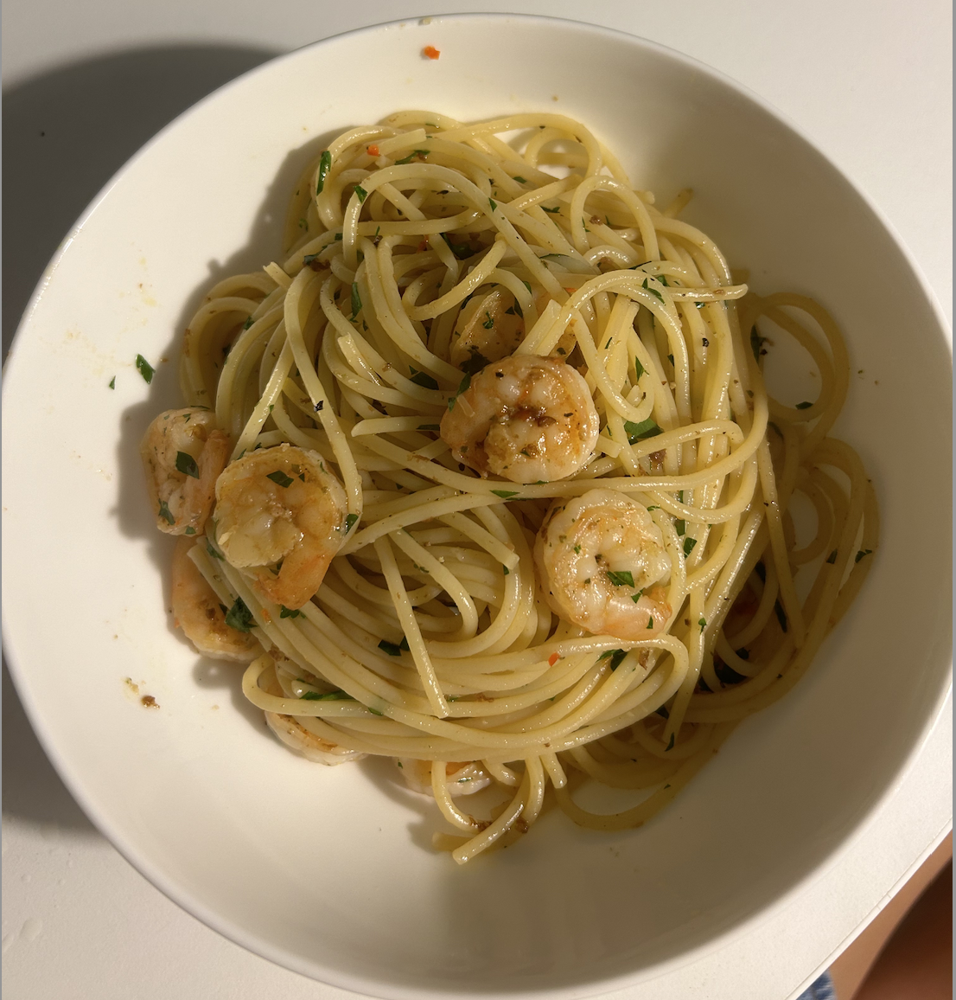

A bright, silky pasta built on garlic, chilli, lemon, and sweet prawns, with a sauce that feels rich without being heavy.
Sometimes I like to throw in a handful of cherry tomatoes for a little extra sweetness and colour, and it’s one of those dishes that feels especially good on a Saturday night when I’ve got the time to make pasta from scratch in the afternoon.
It’s also a great one to cook for other people because it comes together quickly, looks impressive, and always feels a bit special.

2 servings
⏱ 20–25 mins • 💪 High Protein • 🍽 Base: 2 servings
High-quality lean protein from prawns supports muscle recovery, garlic provides immune support, lemon adds vitamin C, and olive oil provides healthy fats for heart health.